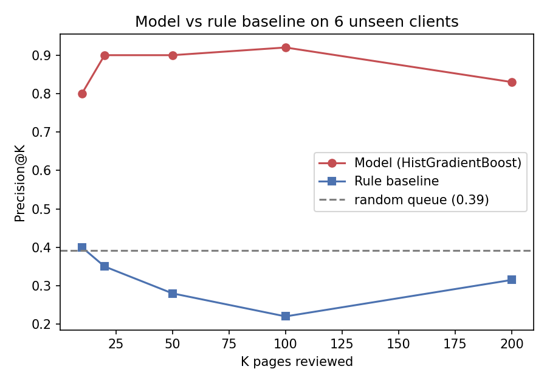
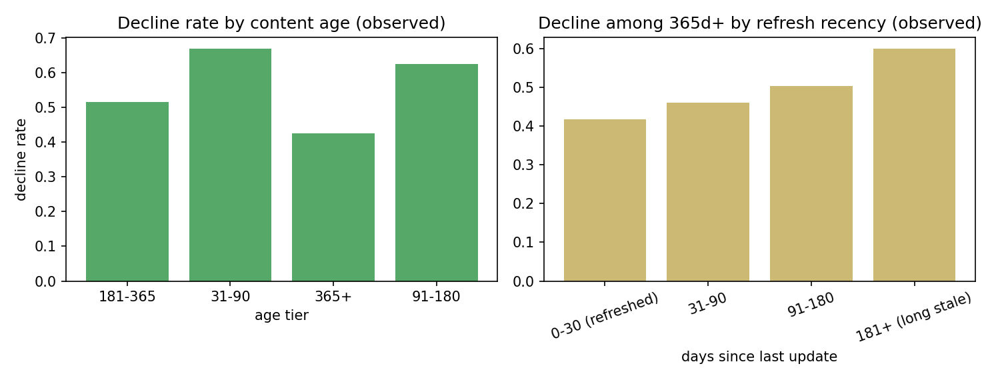
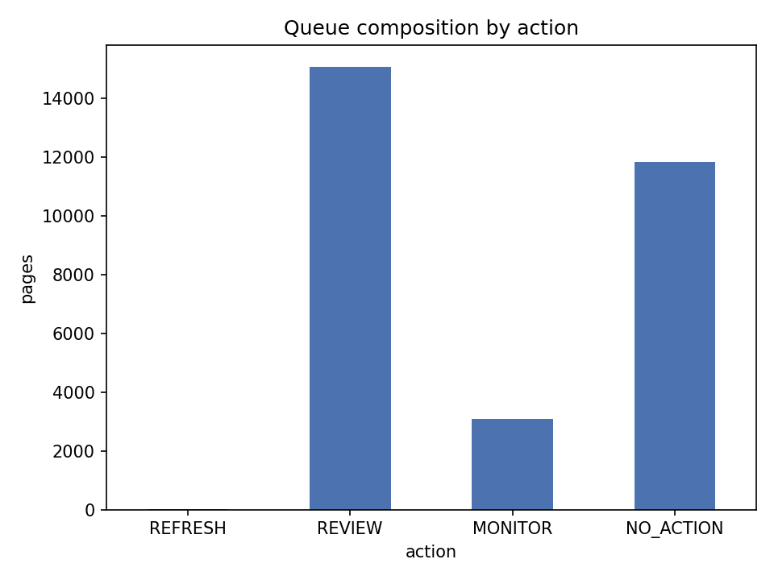
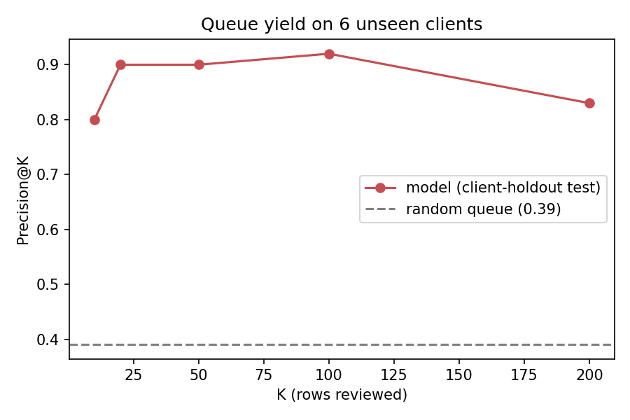

§ 1Abstract
FlyRank's content program publishes and maintains hundreds of live pages per client, and someone must still decide which page to open and fix first. This capstone answers that — the refresh / content-opportunity decision — as a ranking problem on 30,000 anonymized FlyRank search pages. A gradient-boosted model over decision-time content and search signals detects pages whose trailing traffic is already declining, validated with a grouped client-holdout split. On six entirely unseen clients, the model lifts Precision@50 from 0.28 (rule baseline) to 0.90 at a 0.391 base rate — roughly 45 of the top-50 pages an editor reviews are genuinely declining, versus ~14 under the old hand-written rule. The output is a reason-coded, ranked action queue (REFRESH / REVIEW / MONITOR / NO_ACTION) built for bounded editorial capacity, with limitations stated — this detects current decline and never claims to forecast or cause it.
§ 2Introduction — the content problem that is this capstone's case study
FlyRank builds content as infrastructure: pages are written, published, and then continuously optimized against live search data — the full cycle run by algorithms rather than by hand. The case study this paper calls home is the question that comes out of that model: with hundreds of live pages per client, which existing page should a human open and fix first — today?
The concrete shape of the problem, in numbers from our anonymized slice: 30,000 pages across 32 clients, each client carrying its own content templates, keyword targets, and analytics setup. Most pages are healthy. A quieter fraction is already losing search visibility — impressions down 30-day-over-30-day — and of those, only a handful carry enough evidence to justify editor hours. Editorial capacity is the scarce resource: roughly 50 reviews a week. That tension — too many pages, too few reviews — is the refresh / content-opportunity decision this work ranks.
Heuristic flags already do some of this work — if-this-then-that rules with hand-chosen thresholds. They are transparent, they run in production, and they catch obvious cases. But rules stop working where signals get many, tangled, and shifting: a page holding its position while CTR erodes, a high-traffic page whose recent clicks collapse, a stale page that is quietly losing the keywords it owns. No single fixed formula captures that interaction.
This capstone replaces the hand-written refresh rule with a learned decline-risk model for the same decision — and validates it the only way that transfers: on clients the model has never seen.
What a wrong call costs
- False positive (flagged declining, actually fine): an editor spends 10–30 minutes reviewing a healthy page. Capacity is the scarce resource — this is bounded waste.
- False negative (declining, missed): a page with real demand keeps losing visibility and clicks. Cost scales with the page's traffic.
The output is therefore a ranked queue, not a set of labels: Precision@K is the metric that matches editorial workflow, and the top of the queue is where the model must be right.
§ 3Data
Release: the FlyRank ML Internship dataset — the anonymized starter slice content_refresh_anonymized.csv: 30,000 content items × 44 columns across 32 pseudonymized clients, with metrics aggregated over a trailing 90-day window. The full column reference lives in docs/data-dictionary.md.
Public-safe by construction: no client names, domains, URLs, page titles, target keywords, or raw search queries. Only hashed content_id / client_id pseudonyms and numeric/categorical metrics remain. IDs are used for joins and the grouped split only — never as features.
What each row carries:
- Keyword context: search volume, competition, CPC (blank for content with no keyword data — ~8% of rows, concentrated in one content type).
- Content properties: word/character count, age in days, days since last update.
- Trailing-90d search + engagement: impressions, clicks, sessions, avg position, CTR, engagement rate, scroll rate, AI-session share, days-with-impressions / with-sessions.
- Transparent derived tiers: age / freshness / word-count / impression / position tiers.
What we deliberately excluded, and why
| Excluded | Why |
|---|---|
trend_direction, trend_pct, all *_last_30d / *_prev_30d windows | They are the label source: the target is_declining_label is derived from them. Leakage guard — never features. |
content_id, client_id | Pseudonymous identifiers; grouping and split only, never model inputs. |
provider_used, model_used | Generation metadata, not observable content/search signals. |
Product flags (health_score, etc.) | Not present in this release by design — outputs of decisions, not inputs. |
Gotchas honored (they cause 90% of mistakes)
- Rate columns are ×100 percentages:
ctr = 0.76means 0.76%, not 76%. avg_position = 0means "no data", not position zero.scroll_rateandai_traffic_pctcan exceed 100 — different measurement systems, not a bug.- Missingness follows content type; constant imputation (0 / "unknown") plus two
has_*flags avoids injecting a category signal. - Volume floors are applied before reading CTR-by-position tables — the
top_3stratum's median volume is ~53 impressions/90d, where one click swings CTR wildly.
§ 4Methodology
Task and label
Task: rank pages by decline risk, evaluated as Precision@K. In one sentence — a page is flagged declining when its trailing 30-day impression trend direction is down (base rate 54.2%).
trend_pct (last-30d vs prev-30d impressions). All three label sources are locked out of the features. Because the trailing feature windows overlap the label window, this is a detection model for decline that is already underway — not a forecast. That framing is stated in every section that matters.Features (52 columns, decision-time only)
- 18 numeric: keyword volume/competition/CPC; word & char count; log1p(impressions, clicks, sessions, AI sessions); days with impressions; days with sessions; content age; days since last update; CTR; avg position; engagement rate; scroll rate; AI-traffic pct.
- 8 categorical (one-hot): competition level, content type, intent, age tier, freshness tier, word-count tier, impression tier, position tier.
Baseline — the transparent rule (built first, W04)
score = stale × volume × (0.5 + 0.5 × quality)·stale= last update ≥ 180d ago,volume= 90d impressions,quality= share of the page's position tier's floored normal CTR.
One sentence: "prioritize stale, high-volume pages, weighted up only when the page is actually achieving a normal share of its position's CTR." Decision-time inputs only — nothing derived from the label. Honest caveat: the rule scores refresh opportunity while the label scores decline risk; they overlap, they are not identical (Spearman ≈ +0.14). That structural mismatch is precisely why a learned decline model is worth building.
Model comparison
Six families trained on train clients only — Hist Gradient Boosting (the winner), Gradient Boosting, Random Forest, Decision Tree, Extra Trees, Logistic Regression — ranked by predict_proba for the Precision@K queue.
Validation design: grouped client-holdout split
6 of 32 clients (20%) are held out entirely; the same client never appears in both train and test. This is the honest transfer test: pages from one client share templates, keyword profiles, and GA4 configuration, so a random row-split would let the model memorise client identity. A reference random split inflated Precision@50 from 0.90 to 0.96 (W06) — the client-holdout number is the one we report. Seeds fixed at 42; reproducible split reused by every weekly notebook.
Leakage checks (run in the notebook)
- No label-source column in the feature matrix (asserted at build time).
- IDs never features; imputation/encoding/log transforms use no target information.
- Permutation importance computed on held-out test rows only.
Decision rules for the playbook
Deterministic thresholds over decision-time inputs + the model score: REFRESH for high risk + ≥500 impressions + stale; REVIEW for high/borderline risk with measurable traffic; MONITOR for flagged-but-low-signal and stale-but-not-declining; NO_ACTION for low-value/healthy. The queue ranks REFRESH → REVIEW → MONITOR → NO_ACTION, then by decline probability within each band.
§ 5Results — model vs baseline, same split
Same rows, same split, same metrics, one run. Test = 6 unseen clients (2,325 rows, base rate 0.391).
| Method | P@20 | P@50 | P@100 | Avg Prec | ROC-AUC |
|---|---|---|---|---|---|
| Hist Gradient Boost | 0.90 | 0.90 | 0.92 | 0.697 | 0.781 |
| Gradient Boost | 0.80 | 0.84 | 0.81 | 0.668 | 0.773 |
| Random Forest | 0.65 | 0.74 | 0.72 | 0.618 | 0.750 |
| Decision Tree | 0.80 | 0.64 | 0.63 | 0.575 | 0.742 |
| Extra Trees | 0.65 | 0.62 | 0.70 | 0.594 | 0.735 |
| Logistic Regression | 0.35 | 0.40 | 0.44 | 0.522 | 0.700 |
| Rule baseline (W04) | 0.35 | 0.28 | 0.22 | 0.470 | 0.671 |

Precision@K on six unseen clients — the learned model stays near 0.9 while the rule baseline decays toward the random floor.
Reading the numbers honestly
- Every model beats the rule baseline's ROC-AUC (0.671). The winner lifts Precision@50 from 0.28 → 0.90: of the top-50 an editor reviews, ~45 are genuinely declining, vs ~14 under the rule and ~20 under random selection at the 0.391 base rate.
- The model's edge concentrates at the top of the queue — exactly where editorial capacity is spent.
What the model leans on
| Feature | Importance (ROC-AUC drop) |
|---|---|
| days with impressions | 0.297 |
| avg position | 0.058 |
| log impressions (90d) | 0.038 |
| CTR | 0.027 |
| scroll rate | 0.013 |
| content age | 0.005 |
Consistency of engagement (days-with-impressions), presence in results (position), and current traffic are the dominant decision-time signals. No single feature gives 1.0 — no leakage.
Error reading
- False positives are high-traffic, recently-updated pages the model over-weights on engagement — bounded editor waste at the top of the queue.
- False negatives are near-zero-traffic pages (~1 impression/90d) where "down" is noise on tiny numbers — deprioritizing them is arguably correct even when the label misses.
- Failures concentrate below ~100 impressions/90d (W06): rows there carry too little evidence to rank, which is why the playbook sends them to MONITOR/NO_ACTION rather than acting.
Observed decay pattern (directional, not causal)

Left: observed decline rate by content age. Right: observed decline rate among 365+ day pages by time since last update.
Both patterns are observed associations in one snapshot. Age↔decline is confounded by cohorts and seasonality; refresh↔lower-decline is confounded by selection (someone chose which pages to refresh). Neither is evidence that age causes decline or that refreshing causes recovery.
§ 6Limitations & honest framing
- Detects current decline, not future decline. Trailing-90d features overlap the label's 30d window; the model reads decline already under way, and cannot forecast which pages will decline.
- No causal claims. One cross-sectional snapshot. Nothing here shows refreshing causes recovery — the refresh-recently / lower-decline association is confounded by selection.
- Convenience-sample evaluation. Six of 32 clients (2,325 rows). Directional evidence, not proof across all client types or all time periods; top-of-queue point estimates rest on small test numbers.
- Label noise on small volumes. Rows under ~100 impressions/90d are the least reliable; the queue is intentionally silent there.
- Stale pages are rare in this slice (~174 of 30k untouched ≥180d), so the REFRESH band is small by design, not because refresh doesn't matter.
- Baseline answers a neighboring question. The rule scores refresh opportunity; the label scores decline risk. Beating it legitimately, but the comparison is apples-to-adjacent-fruit.
- No time-aware split. This capstone uses the single 30k snapshot; a true forward-label design needs the ~79M-row daily panel (future work, listed in Reproducibility).
§ 7Ranked recommendations — the action playbook
Deployment-style scoring of the full 30k slice (model trained on train clients, then scoring everything) produces the queue. Every row carries one action and one reason code.

Queue composition across the full slice.

Queue yield — precision at K on the six unseen clients.
| Action | Pages | Observed decline rate | What the human does |
|---|---|---|---|
| REFRESH | 16 | 94% | Stale (≥180d), high risk, ≥500 impressions — rewrite/refresh, re-check next cycle |
| REVIEW | 15,056 | 75% | High/borderline risk with real traffic — diagnose: keyword drift, position loss, out-of-date content |
| MONITOR | 3,090 | 69% | Flagged but <100 impressions, or stale-but-not-declining — re-check next cycle |
| NO_ACTION | 11,838 | 24% | Low-value or healthy — leave alone |
Reason codes in words a human trusts
| Code | Action | Meaning |
|---|---|---|
stale_declining_high_value | REFRESH | Declining, high risk, ≥500 impressions, untouched ≥180d — the decayed lever |
declining_high_signal | REVIEW | High decline risk + measurable traffic — decline already under way |
declining_borderline | REVIEW | Moderate decline risk with traffic — confirm with a second signal |
declining_low_signal / borderline_low_signal | MONITOR | Flagged declining but <100 impressions — too small to trust |
stale_high_volume / stale_flat | MONITOR | Stale but not yet flagged declining |
low_value | NO_ACTION | <100 impressions/90d — not worth editor time |
healthy | NO_ACTION | Growing/stable with traffic |
How an editor uses this tomorrow
- Open the top of the queue (
REFRESH, thenREVIEW), bounded to a top-50 pass (~6–7 editor-hours). - Read the page. The model scores aggregates; it cannot see whether content is accurate, current, or keyword-aligned.
- Check the trend story — query/position data — before touching anything: is it a lost keyword, a stale fact, or a seasonal dip?
- Refresh the decaying parts, not the page wholesale; keep a second look on
REVIEWrows flagged on small numbers. - Log outcomes. Without logged decisions, the playbook's value cannot be measured.
The no-go list
- No auto-publishing, auto-rewriting, auto-deleting, or auto-de-indexing from the score — every change needs a human read.
- No firing external systems (CRM, email, CMS, ads) from the score.
trend_direction/trend_pct/is_declining_labelmust never become inputs downstream — they are the target.
Confidence: the top-of-queue ranking (REFRESH) is the strongest result; the REVIEW band is directional. Low-signal rows are intentionally left silent.
§ 8Reproducibility
- Notebook:
work/notebooks/capstone.ipynbruns end-to-end (Run all). Every number on this page is produced live and written to committed receipts. - Seeds:
RANDOM_STATE = 42everywhere; the same deterministic client-holdout split is reused across W04–W07 notebooks. - Receipts (committed):
work/outputs/capstone_metrics.json(this run),baseline_metrics.json(W04),playbook_metrics.json(W07). - Queue:
work/outputs/content_action_queue.csvis regenerated by the notebook and intentionally not committed (CI leak-guard). - Environment: Python 3.12 · pandas ≥2.2 · numpy ≥1.26 · scikit-learn ≥1.4 · matplotlib ≥3.8 (
requirements.txt). - Data:
data/raw/content_refresh_anonymized.csvships in the repo; the ~79M-row daily release (FlyRank/internship-warehouse) is gated on Hugging Face. - Future work: a time-aware split with forward-window labels on the daily panel; an AI-referral opportunity read treated as ranking EDA, never a binary classifier.
All weekly notebooks that build this result — research question (W01), task framing (W02), data contract + leakage (W03), baseline + signal audit (W04), model (W05), validation audit (W06), action playbook (W07), capstone (W08) — are in work/notebooks/ and open via their Colab badges.
§ 9Acknowledgments & data credit
Built on the FlyRank ML Internship dataset — real, pseudonymized Google Search Console + Google Analytics search-performance data, released for this internship and used here under the repo's data-use rules. Find FlyRank at https://flyrank.ai.
All analysis, claims, and honest framing are the author's; the dataset is FlyRank's. No client names, domains, URLs, target keywords, or private queries appear anywhere in this work by design.